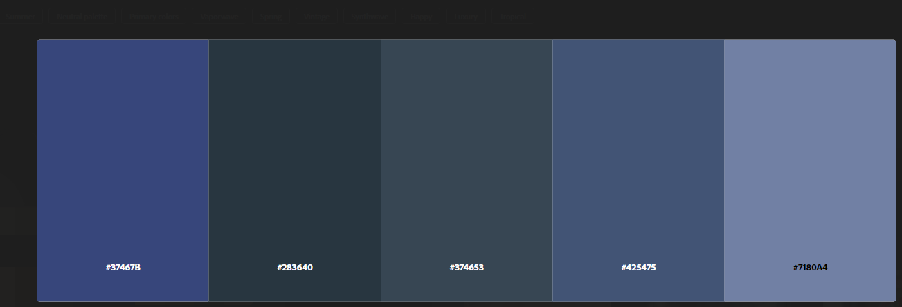

O Círculo Cromático
O círculo cromático é uma ferramenta essencial no design gráfico. Ele organiza as cores de forma circular, facilitando a criação de combinações harmônicas.

Nome: Helyaby Gabriel Ferreira Vieira
Harmonia Cromática Escolhida: Monocromática
Paleta de Cores: #37467B, #006eff, #009dff, #003049, #669BBC, #000924, #789EBF, #ffffff(Branco);
O círculo cromático é uma ferramenta essencial no design gráfico. Ele organiza as cores de forma circular, facilitando a criação de combinações harmônicas.
As harmonias cromáticas criam efeitos visuais equilibrados e agradáveis. As principais são: